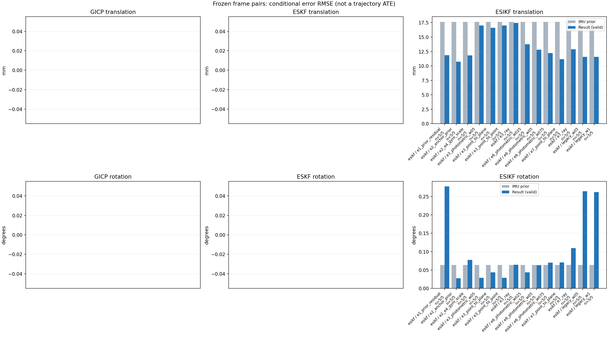

20261015_112845_yaw_left · depth=disparity_cache · cache=a656b235189c13cbe2d7
模型视差：/home/ubuntu22/slam/SIO_SLAM/models/tensorrt/disp_896x448_fp16.plan；engine SHA256=604cf6ac1f705c877260711730dd5d2d58c2a21f3020c03c668401ef7fb1e768。输入为生产裁剪与光照处理后的 RGB 0..255；此实验使用原始浮点像素视差，不应用完整前端的邻域视差后处理。
原始 ONNX SHA256：e9f49736a65d68d06681add463866b6defdf78fdd7f4f50f6cc941b682fdc0bc。
代价体图改写验证：ONNX Runtime 固定随机特征输入，最大绝对误差 0；该项检查图改写，完整模型精度仍需由录制数据评估。
配准代码版本：744ac2d993ae629b0cc44a3b1d995e04ab4fad48；观测生成版本：744ac2d993ae629b0cc44a3b1d995e04ab4fad48。
固定图像对与纯 IMU 先验；ESKF 回放固定 GICP 观测，ESIKF 直接读取点云。真值只用于此报告。
同时查看 converged 与 solver_status：上游默认 Stereo 在 max_iter / stopped_at_minimum 时也可能置 converged=true。valid 表示输入检查通过，不表示精度提升。欧氏 GICP 未提供独立的点距 RMSE，该列显示 NaN。
误差按每对图像的锚点计算，单位 m / degrees。此处 RMSE 不是全序列 ATE；末帧受同一锚点条件约束。NIS 与条件马氏距离是诊断量，少量相关图像对不能用于宣称协方差已校准。
全部指标 CSV · R / P 矩阵 CSV · Stereo 求解逐轮 CSV · ESIKF 逐轮轨迹 CSV · 末轮 H / R / K_pose 矩阵 CSV · 配置快照 · 矢量图
unflagged 排除纯惯性先验平移误差超过 50 mm 的图像对；whitened 为误差按协方差白化后的每自由度均值，协方差与实际误差相符时约为 1。
| stage | method | variant | valid | total | result_translation_rmse_m | result_rotation_rmse_deg | result_translation_median_m | result_rotation_median_deg | result_translation_rmse_unflagged_m | result_rotation_rmse_unflagged_deg | improved_translation | improved_rotation | posterior_whitened_by_P_rot_mean | posterior_whitened_by_P_trans_mean |
|---|---|---|---|---|---|---|---|---|---|---|---|---|---|---|
| esikf | esikf | e1_prior_residual | 5 | 5 | 0.011863 | 0.2772 | 0.0066182 | 0.12802 | 0.011863 | 0.2772 | 2 | 1 | 118.03 | 138.59 |
| esikf | esikf | e2_anchor_prior | 5 | 5 | 0.010748 | 0.027548 | 0.0050723 | 0.016202 | 0.010748 | 0.027548 | 2 | 1 | 26.051 | 254.25 |
| esikf | esikf | e2_e4_gyro_scale | 5 | 5 | 0.011844 | 0.077319 | 0.0045061 | 0.033109 | 0.011844 | 0.077319 | 2 | 1 | 22.784 | 254.75 |
| esikf | esikf | e3_photometric_w05 | 5 | 5 | 0.016993 | 0.028583 | 0.0034003 | 0.0099335 | 0.016993 | 0.028583 | 3 | 3 | 1.4188 | 111.58 |
| esikf | esikf | e3_point_to_plane | 5 | 5 | 0.016606 | 0.043529 | 0.0033649 | 0.0086843 | 0.016606 | 0.043529 | 4 | 3 | 1.3342 | 102.01 |
| esikf | esikf | e3_point_to_point | 5 | 5 | 0.01699 | 0.028509 | 0.0034004 | 0.0099302 | 0.01699 | 0.028509 | 3 | 3 | 1.4186 | 111.59 |
| esikf | esikf | e3_ray | 5 | 5 | 0.017438 | 0.064173 | 0.0033343 | 0.01004 | 0.017438 | 0.064173 | 3 | 2 | 1.3722 | 102.69 |
| esikf | esikf | e6_photometric_w025 | 5 | 5 | 0.01377 | 0.04386 | 0.0038616 | 0.019693 | 0.01377 | 0.04386 | 2 | 1 | 3.6834 | 174.03 |
| esikf | esikf | e6_photometric_w05 | 5 | 5 | 0.012803 | 0.063195 | 0.0041081 | 0.026111 | 0.012803 | 0.063195 | 2 | 1 | 9.8588 | 212.12 |
| esikf | esikf | e6_photometric_w075 | 5 | 5 | 0.012246 | 0.069735 | 0.004304 | 0.030191 | 0.012246 | 0.069735 | 2 | 1 | 15.075 | 236.24 |
| esikf | esikf | e7_point_to_plane | 5 | 5 | 0.011169 | 0.070529 | 0.0042555 | 0.022212 | 0.011169 | 0.070529 | 3 | 0 | 3.6652 | 84.844 |
| esikf | esikf | e7_ray | 5 | 5 | 0.012882 | 0.10923 | 0.0042088 | 0.010459 | 0.012882 | 0.10923 | 2 | 1 | 1.5226 | 111.66 |
| esikf | esikf | legacy_w05 | 5 | 5 | 0.011558 | 0.26426 | 0.0062632 | 0.10734 | 0.011558 | 0.26426 | 2 | 1 | 49.271 | 64.148 |
| esikf | esikf | legacy_w1 | 5 | 5 | 0.011572 | 0.26167 | 0.0056179 | 0.1077 | 0.011572 | 0.26167 | 2 | 1 | 95.146 | 129.05 |

| stage | case | method | variant | status | solver_status | inliers | converged | covariance_convention | covariance_from_hessian | fitness | registration_rmse_m | prior_trans_error_m | result_trans_error_m | prior_rot_error_deg | result_rot_error_deg | prior_flagged | R_rot_trace_rad2 | R_pos_trace_m2 | nis_regularized | posterior_whitened_by_P_rot | posterior_whitened_by_P_trans |
|---|---|---|---|---|---|---|---|---|---|---|---|---|---|---|---|---|---|---|---|---|---|
| esikf | static_start | esikf | legacy_w1 | updated | converged | 23390 | 1 | 1 | 0 | 0 | 7.8303e-05 | 0.0042793 | 0.0034263 | 0.022234 | 0 | 4.4464e-08 | 8.4612e-07 | nan | 7.8743 | 23.811 | |
| esikf | static_start | esikf | legacy_w05 | updated | converged | 23390 | 1 | 1 | 0 | 0 | 7.8303e-05 | 0.0042838 | 0.0034263 | 0.022271 | 0 | 8.89e-08 | 1.6912e-06 | nan | 3.9626 | 11.94 | |
| esikf | static_start | esikf | e1_prior_residual | updated | converged | 23403 | 1 | 1 | 0 | 0 | 7.8303e-05 | 0.0061333 | 0.0034263 | 0.035572 | 0 | 4.4078e-08 | 8.2764e-07 | nan | 16.117 | 49.737 | |
| esikf | static_start | esikf | e2_anchor_prior | updated | converged | 23379 | 1 | 1 | 0 | 0 | 7.8303e-05 | 0.00032871 | 0.0034263 | 0.010083 | 0 | 4.4411e-08 | 8.4662e-07 | nan | 2.4057 | 1.6884 | |
| esikf | static_start | esikf | e2_e4_gyro_scale | updated | converged | 23379 | 1 | 1 | 0 | 0 | 7.8303e-05 | 0.00032871 | 0.0034263 | 0.010083 | 0 | 4.4411e-08 | 8.4662e-07 | nan | 2.4057 | 1.6884 | |
| esikf | static_start | esikf | e6_photometric_w075 | updated | converged | 23378 | 1 | 1 | 0 | 0 | 7.8303e-05 | 0.0002767 | 0.0034263 | 0.0090451 | 0 | 5.9213e-08 | 1.1287e-06 | nan | 1.8606 | 1.0896 | |
| esikf | static_start | esikf | e6_photometric_w05 | updated | converged | 23378 | 1 | 1 | 0 | 0 | 7.8303e-05 | 0.00021974 | 0.0034263 | 0.0077596 | 0 | 8.8807e-08 | 1.6927e-06 | nan | 1.2689 | 0.60177 | |
| esikf | static_start | esikf | e6_photometric_w025 | updated | converged | 23377 | 1 | 1 | 0 | 0 | 7.8303e-05 | 0.00014806 | 0.0034263 | 0.0059615 | 0 | 1.7754e-07 | 3.3828e-06 | nan | 0.62724 | 0.21719 | |
| esikf | static_start | esikf | e7_ray | updated | converged | 23377 | 1 | 1 | 0 | 0 | 7.8303e-05 | 0.00029666 | 0.0034263 | 0.0080542 | 0 | 0.040371 | 4.1157e-05 | nan | 0.59171 | 0.49346 | |
| esikf | static_start | esikf | e7_point_to_plane | updated | converged | 23377 | 1 | 1 | 0 | 0 | 7.8303e-05 | 6.1421e-05 | 0.0034263 | 0.0074475 | 0 | 5.2364e-07 | 4.9285e-06 | nan | 0.52362 | 0.023491 | |
| esikf | static_start | esikf | e3_point_to_point | updated | converged | 23377 | 1 | 1 | 0 | 0 | 7.8303e-05 | 7.1595e-05 | 0.0034263 | 0.0035059 | 0 | 2.432e-06 | 5.0101e-05 | nan | 0.11383 | 0.026622 | |
| esikf | static_start | esikf | e3_photometric_w05 | updated | converged | 23377 | 1 | 1 | 0 | 0 | 7.8303e-05 | 7.1625e-05 | 0.0034263 | 0.0035043 | 0 | 2.4308e-06 | 5.0177e-05 | nan | 0.11373 | 0.026642 | |
| esikf | static_start | esikf | e3_ray | updated | converged | 23377 | 1 | 1 | 0 | 0 | 7.8303e-05 | 7.8928e-05 | 0.0034263 | 0.0034744 | 0 | 3.5569 | 0.003574 | nan | 0.10312 | 0.030732 | |
| esikf | static_start | esikf | e3_point_to_plane | updated | converged | 23377 | 1 | 1 | 0 | 0 | 7.8303e-05 | 7.7946e-05 | 0.0034263 | 0.0035922 | 0 | 2.58e-05 | 0.00014859 | nan | 0.11079 | 0.030181 | |
| esikf | sync_motion | esikf | legacy_w1 | updated | converged | 23397 | 1 | 1 | 0 | 0 | 0.00039414 | 0.010664 | 0.010052 | 0.0779 | 0 | 4.7327e-08 | 8.4095e-07 | nan | 76.624 | 165.97 | |
| esikf | sync_motion | esikf | legacy_w05 | updated | converged | 23398 | 1 | 1 | 0 | 0 | 0.00039414 | 0.010189 | 0.010052 | 0.075601 | 0 | 9.4363e-08 | 1.6714e-06 | nan | 36.101 | 76.692 | |
| esikf | sync_motion | esikf | e1_prior_residual | updated_not_converged | max_iterations | 23396 | 0 | 1 | 0 | 0 | 0.00039414 | 0.011251 | 0.010052 | 0.079839 | 0 | 4.7325e-08 | 8.4172e-07 | nan | 81.412 | 182.18 | |
| esikf | sync_motion | esikf | e2_anchor_prior | updated | converged | 23385 | 1 | 1 | 0 | 0 | 0.00039414 | 0.0033767 | 0.010052 | 0.016202 | 0 | 4.7693e-08 | 8.5664e-07 | nan | 13.455 | 75.052 | |
| esikf | sync_motion | esikf | e2_e4_gyro_scale | updated | converged | 23360 | 1 | 1 | 0 | 0 | 0.00039414 | 0.0035038 | 0.010052 | 0.033109 | 0 | 4.7767e-08 | 8.5885e-07 | nan | 15.962 | 42.965 | |
| esikf | sync_motion | esikf | e6_photometric_w075 | updated | converged | 23363 | 1 | 1 | 0 | 0 | 0.00039414 | 0.0029625 | 0.010052 | 0.030191 | 0 | 6.3647e-08 | 1.1431e-06 | nan | 9.4869 | 26.95 | |
| esikf | sync_motion | esikf | e6_photometric_w05 | updated | converged | 23354 | 1 | 1 | 0 | 0 | 0.00039414 | 0.0023916 | 0.010052 | 0.026111 | 0 | 9.5801e-08 | 1.7315e-06 | nan | 4.7847 | 14.51 | |
| esikf | sync_motion | esikf | e6_photometric_w025 | updated | converged | 23354 | 1 | 1 | 0 | 0 | 0.00039414 | 0.0017217 | 0.010052 | 0.019693 | 0 | 1.9096e-07 | 3.4371e-06 | nan | 1.7548 | 5.2429 | |
| esikf | sync_motion | esikf | e7_ray | updated | converged | 23325 | 1 | 1 | 0 | 0 | 0.00039414 | 0.0018957 | 0.010052 | 0.010459 | 0 | 0.0084051 | 1.2342e-05 | nan | 0.34645 | 1.3713 | |
| esikf | sync_motion | esikf | e7_point_to_plane | updated | converged | 23325 | 1 | 1 | 0 | 0 | 0.00039414 | 0.0023904 | 0.010052 | 0.024868 | 0 | 5.3865e-07 | 4.8393e-06 | nan | 3.3554 | 4.8619 | |
| esikf | sync_motion | esikf | e3_point_to_point | updated | converged | 23334 | 1 | 1 | 0 | 0 | 0.00039414 | 0.00047119 | 0.010052 | 0.0099302 | 0 | 2.6183e-06 | 5.0934e-05 | nan | 0.30377 | 0.082107 | |
| esikf | sync_motion | esikf | e3_photometric_w05 | updated | converged | 23334 | 1 | 1 | 0 | 0 | 0.00039414 | 0.00047072 | 0.010052 | 0.0099335 | 0 | 2.6169e-06 | 5.1004e-05 | nan | 0.30406 | 0.081793 | |
| esikf | sync_motion | esikf | e3_ray | updated | converged | 23334 | 1 | 1 | 0 | 0 | 0.00039414 | 0.00038404 | 0.010052 | 0.01004 | 0 | 0.75296 | 0.0011261 | nan | 0.30694 | 0.023785 | |
| esikf | sync_motion | esikf | e3_point_to_plane | updated | converged | 23320 | 1 | 1 | 0 | 0 | 0.00039414 | 0.00036157 | 0.010052 | 0.0086843 | 0 | 2.6352e-05 | 0.000144 | nan | 0.22644 | 0.035929 | |
| esikf | main_motion | esikf | legacy_w1 | updated | converged | 17557 | 1 | 1 | 0 | 0 | 0.0033198 | 0.0056179 | 0.017216 | 0.13093 | 0 | 1.0472e-07 | 1.0532e-06 | nan | 43.708 | 31.828 | |
| esikf | main_motion | esikf | legacy_w05 | updated | converged | 17569 | 1 | 1 | 0 | 0 | 0.0033198 | 0.0062632 | 0.017216 | 0.1569 | 0 | 2.1033e-07 | 2.1014e-06 | nan | 32.464 | 19.977 | |
| esikf | main_motion | esikf | e1_prior_residual | updated_not_converged | max_iterations | 17610 | 0 | 1 | 0 | 0 | 0.0033198 | 0.0066182 | 0.017216 | 0.20287 | 0 | 1.0371e-07 | 1.0379e-06 | nan | 127.19 | 46.044 | |
| esikf | main_motion | esikf | e2_anchor_prior | updated | converged | 17528 | 1 | 1 | 0 | 0 | 0.0033198 | 0.0050723 | 0.017216 | 0.026197 | 0 | 1.067e-07 | 1.0709e-06 | nan | 16.82 | 66.627 | |
| esikf | main_motion | esikf | e2_e4_gyro_scale | updated | converged | 17554 | 1 | 1 | 0 | 0 | 0.0033198 | 0.0045061 | 0.017216 | 0.1211 | 0 | 1.0566e-07 | 1.0595e-06 | nan | 70.668 | 35.07 | |
| esikf | main_motion | esikf | e6_photometric_w075 | updated | converged | 17553 | 1 | 1 | 0 | 0 | 0.0033198 | 0.004304 | 0.017216 | 0.10955 | 0 | 1.4038e-07 | 1.4182e-06 | nan | 46.226 | 27.352 | |
| esikf | main_motion | esikf | e6_photometric_w05 | updated | converged | 17559 | 1 | 1 | 0 | 0 | 0.0033198 | 0.0041081 | 0.017216 | 0.10206 | 0 | 2.0947e-07 | 2.1253e-06 | nan | 30.686 | 20.814 | |
| esikf | main_motion | esikf | e6_photometric_w025 | updated | converged | 17522 | 1 | 1 | 0 | 0 | 0.0033198 | 0.0038616 | 0.017216 | 0.068935 | 0 | 4.2651e-07 | 4.2911e-06 | nan | 7.997 | 14.739 | |
| esikf | main_motion | esikf | e7_ray | updated | converged | 17542 | 1 | 1 | 0 | 0 | 0.0033198 | 0.0042088 | 0.017216 | 0.021535 | 0 | 0.020543 | 1.8325e-05 | nan | 0.21749 | 18.5 | |
| esikf | main_motion | esikf | e7_point_to_plane | updated | converged | 17543 | 1 | 1 | 0 | 0 | 0.0033198 | 0.0042555 | 0.017216 | 0.022212 | 0 | 7.9896e-07 | 4.2367e-06 | nan | 0.67891 | 18.365 | |
| esikf | main_motion | esikf | e3_point_to_point | updated | converged | 17513 | 1 | 1 | 0 | 0 | 0.0033198 | 0.0034004 | 0.017216 | 0.025613 | 0 | 5.8438e-06 | 6.3635e-05 | nan | 0.39796 | 8.2677 | |
| esikf | main_motion | esikf | e3_photometric_w05 | updated | converged | 17513 | 1 | 1 | 0 | 0 | 0.0033198 | 0.0034003 | 0.017216 | 0.025609 | 0 | 5.8399e-06 | 6.374e-05 | nan | 0.3978 | 8.2663 | |
| esikf | main_motion | esikf | e3_ray | updated | converged | 17521 | 1 | 1 | 0 | 0 | 0.0033198 | 0.0033343 | 0.017216 | 0.017265 | 0 | 1.8838 | 0.001715 | nan | 0.14009 | 7.6121 | |
| esikf | main_motion | esikf | e3_point_to_plane | updated | converged | 17521 | 1 | 1 | 0 | 0 | 0.0033198 | 0.0033649 | 0.017216 | 0.018165 | 0 | 3.9607e-05 | 0.00012723 | nan | 0.16094 | 7.8571 | |
| esikf | main_motion_long | esikf | legacy_w1 | updated | converged | 12963 | 1 | 1 | 0 | 0 | 0.025379 | 0.021915 | 0.14096 | 0.1077 | 0 | 1.5109e-07 | 1.1935e-06 | nan | 14.318 | 396.68 | |
| esikf | main_motion_long | esikf | legacy_w05 | updated | converged | 12963 | 1 | 1 | 0 | 0 | 0.025379 | 0.021932 | 0.14096 | 0.10734 | 0 | 3.0182e-07 | 2.3863e-06 | nan | 7.1382 | 198.67 | |
| esikf | main_motion_long | esikf | e1_prior_residual | updated_not_converged | max_iterations | 12949 | 0 | 1 | 0 | 0 | 0.025379 | 0.021564 | 0.14096 | 0.12802 | 0 | 1.5192e-07 | 1.1903e-06 | nan | 20.137 | 383.82 | |
| esikf | main_motion_long | esikf | e2_anchor_prior | updated_not_converged | max_iterations | 12974 | 0 | 1 | 0 | 0 | 0.025379 | 0.018034 | 0.14096 | 0.050675 | 0 | 1.514e-07 | 1.1847e-06 | nan | 90.077 | 320.73 | |
| esikf | main_motion_long | esikf | e2_e4_gyro_scale | updated_not_converged | max_iterations | 12945 | 0 | 1 | 0 | 0 | 0.025379 | 0.021297 | 0.14096 | 0.1177 | 0 | 1.5174e-07 | 1.1939e-06 | nan | 17.408 | 386.86 | |
| esikf | main_motion_long | esikf | e6_photometric_w075 | updated_not_converged | max_iterations | 12957 | 0 | 1 | 0 | 0 | 0.025379 | 0.021219 | 0.14096 | 0.10568 | 0 | 2.0173e-07 | 1.5867e-06 | nan | 10.668 | 291.92 | |
| esikf | main_motion_long | esikf | e6_photometric_w05 | updated_not_converged | max_iterations | 12957 | 0 | 1 | 0 | 0 | 0.025379 | 0.020923 | 0.14096 | 0.09317 | 0 | 3.0295e-07 | 2.3916e-06 | nan | 5.6017 | 192.86 | |
| esikf | main_motion_long | esikf | e6_photometric_w025 | updated_not_converged | max_iterations | 12963 | 0 | 1 | 0 | 0 | 0.025379 | 0.020448 | 0.14096 | 0.066029 | 0 | 6.0239e-07 | 4.7498e-06 | nan | 1.47 | 98.929 | |
| esikf | main_motion_long | esikf | e7_ray | updated_not_converged | max_iterations | 13027 | 0 | 1 | 0 | 0 | 0.025379 | 0.015795 | 0.14096 | 0.24289 | 0 | 0.0077188 | 8.0672e-06 | nan | 0.80807 | 49.506 | |
| esikf | main_motion_long | esikf | e7_point_to_plane | updated_not_converged | max_iterations | 12928 | 0 | 1 | 0 | 0 | 0.025379 | 0.017351 | 0.14096 | 0.153 | 0 | 1.1322e-06 | 4.2992e-06 | nan | 5.0762 | 67.201 | |
| esikf | main_motion_long | esikf | e3_point_to_point | updated_not_converged | max_iterations | 12979 | 0 | 1 | 0 | 0 | 0.025379 | 0.023788 | 0.14096 | 0.057232 | 0 | 8.7303e-06 | 7.8201e-05 | nan | 0.29507 | 20.338 | |
| esikf | main_motion_long | esikf | e3_photometric_w05 | updated_not_converged | max_iterations | 12979 | 0 | 1 | 0 | 0 | 0.025379 | 0.023798 | 0.14096 | 0.057418 | 0 | 8.7264e-06 | 7.8343e-05 | nan | 0.2957 | 20.337 | |
| esikf | main_motion_long | esikf | e3_ray | updated | converged | 13019 | 1 | 1 | 0 | 0 | 0.025379 | 0.02475 | 0.14096 | 0.14197 | 0 | 0.6891 | 0.00070271 | nan | 0.27577 | 13.64 | |
| esikf | main_motion_long | esikf | e3_point_to_plane | updated | converged | 12987 | 1 | 1 | 0 | 0 | 0.025379 | 0.022476 | 0.14096 | 0.095049 | 0 | 5.7288e-05 | 0.000141 | nan | 0.23261 | 15.74 | |
| esikf | static_end | esikf | legacy_w1 | updated | converged | 9220 | 1 | 1 | 0 | 0 | 0.03002 | 0.0050662 | 0.004953 | 0.55411 | 0 | 1.5137e-07 | 9.0411e-07 | nan | 333.2 | 26.989 | |
| esikf | static_end | esikf | legacy_w05 | updated | converged | 9221 | 1 | 1 | 0 | 0 | 0.03002 | 0.0050522 | 0.004953 | 0.5539 | 0 | 3.0246e-07 | 1.8063e-06 | nan | 166.69 | 13.464 | |
| esikf | static_end | esikf | e1_prior_residual | updated_not_converged | max_iterations | 9216 | 0 | 1 | 0 | 0 | 0.03002 | 0.0055356 | 0.004953 | 0.56482 | 0 | 1.5171e-07 | 9.0861e-07 | nan | 345.29 | 31.164 | |
| esikf | static_end | esikf | e2_anchor_prior | updated_not_converged | max_iterations | 9246 | 0 | 1 | 0 | 0 | 0.03002 | 0.014667 | 0.004953 | 0.013267 | 0 | 1.4878e-07 | 8.8969e-07 | nan | 7.4988 | 807.18 | |
| esikf | static_end | esikf | e2_e4_gyro_scale | updated_not_converged | max_iterations | 9246 | 0 | 1 | 0 | 0 | 0.03002 | 0.014667 | 0.004953 | 0.013268 | 0 | 1.4878e-07 | 8.8969e-07 | nan | 7.4763 | 807.15 | |
| esikf | static_end | esikf | e6_photometric_w075 | updated_not_converged | max_iterations | 9202 | 0 | 1 | 0 | 0 | 0.03002 | 0.016499 | 0.004953 | 0.012346 | 0 | 1.9944e-07 | 1.2005e-06 | nan | 7.1334 | 833.91 | |
| esikf | static_end | esikf | e6_photometric_w05 | updated_not_converged | max_iterations | 9179 | 0 | 1 | 0 | 0 | 0.03002 | 0.018951 | 0.004953 | 0.01138 | 0 | 3.0262e-07 | 1.8317e-06 | nan | 6.9528 | 831.82 | |
| esikf | static_end | esikf | e6_photometric_w025 | updated | converged | 9222 | 1 | 1 | 0 | 0 | 0.03002 | 0.022629 | 0.004953 | 0.0091294 | 0 | 6.2521e-07 | 3.8728e-06 | nan | 6.5681 | 751.02 | |
| esikf | static_end | esikf | e7_ray | updated | converged | 9267 | 1 | 1 | 0 | 0 | 0.03002 | 0.023641 | 0.004953 | 0.0045102 | 0 | 0.003291 | 5.2389e-06 | nan | 5.6494 | 488.41 | |
| esikf | static_end | esikf | e7_point_to_plane | updated | converged | 9199 | 1 | 1 | 0 | 0 | 0.03002 | 0.017286 | 0.004953 | 0.017177 | 0 | 9.5983e-07 | 3.4143e-06 | nan | 8.6917 | 333.77 | |
| esikf | static_end | esikf | e3_point_to_point | updated | converged | 9389 | 1 | 1 | 0 | 0 | 0.03002 | 0.029422 | 0.004953 | 0.0046121 | 0 | 8.8948e-06 | 6.1629e-05 | nan | 5.9824 | 529.25 | |
| esikf | static_end | esikf | e3_photometric_w05 | updated | converged | 9389 | 1 | 1 | 0 | 0 | 0.03002 | 0.029423 | 0.004953 | 0.0046127 | 0 | 8.887e-06 | 6.1707e-05 | nan | 5.9827 | 529.21 | |
| esikf | static_end | esikf | e3_ray | updated | converged | 9393 | 1 | 1 | 0 | 0 | 0.03002 | 0.029942 | 0.004953 | 0.0049289 | 0 | 0.23819 | 0.00041563 | nan | 6.0351 | 492.16 | |
| esikf | static_end | esikf | e3_point_to_plane | updated | converged | 9383 | 1 | 1 | 0 | 0 | 0.03002 | 0.029362 | 0.004953 | 0.0046235 | 0 | 4.6177e-05 | 0.00010025 | nan | 5.9404 | 486.41 |